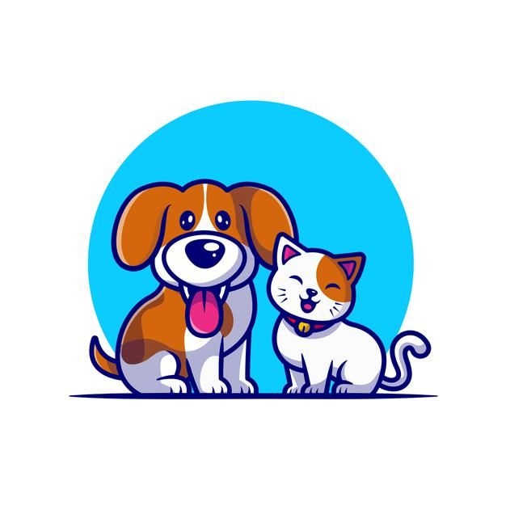
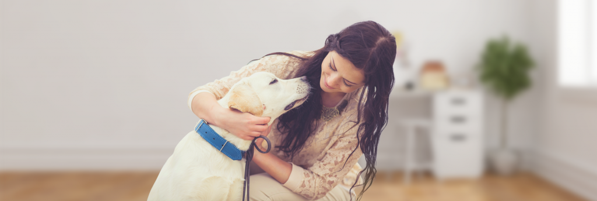
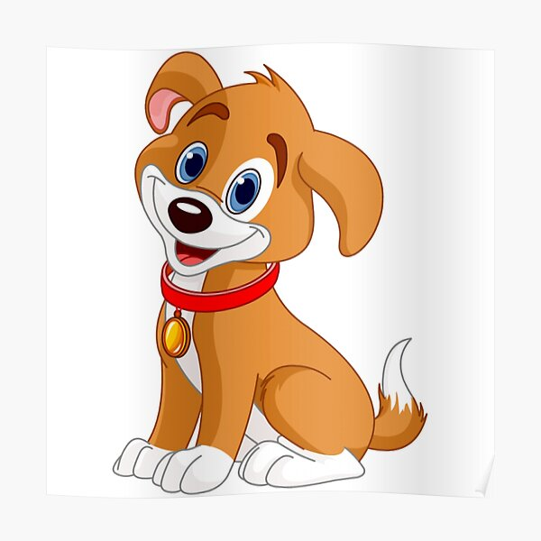

Mision de huellitas
En Huellitas, estamos comprometidos a enriquecer la vida de las mascotas y sus dueños a través de productos y servicios que promuevan la armonía, la diversión y la conexión profunda con nuestros fieles amigos peludos. Nuestra misión es ofrecer una cuidadosa selección de productos innovadores y de alta calidad que abarquen desde elementos esenciales para el cuidado diario hasta elementos que fomenten un estilo de vida activo y saludable para las mascotas y sus compañeros humanos. Nos esforzamos por ser un recurso confiable para información útil y consejos prácticos sobre la crianza y el cuidado de mascotas, cultivando así una comunidad que comparte la misma pasión por el bienestar animal. Al hacerlo, aspiramos a convertirnos en un socio integral en el viaje compartido de crear recuerdos inolvidables y fortalecer los lazos especiales que existen entre las mascotas y sus dueños.
 Vision de huellitas
Visión de Huellitas: Nuestra visión es crear un mundo en el que cada mascota sea amada, cuidada y atendida con respeto y cariño. Imaginamos una comunidad global en la que los lazos entre las personas y sus mascotas sean fuertes y significativos, enriqueciendo las vidas de ambas partes. A través de Huellitas, nos esforzamos por ser líderes en la industria de productos para mascotas, impulsando la innovación y ofreciendo soluciones inteligentes que mejoren la calidad de vida de nuestras mascotas. Visualizamos una plataforma en línea que no solo ofrece productos excepcionales, sino que también educa y empodera a los amantes de las mascotas con información actualizada sobre la crianza, el bienestar y el comportamiento animal.